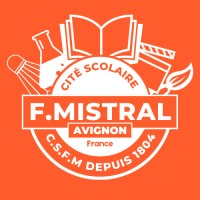

2026 - Cité scolaire Mistral

Structure : lycée et collège publics.
Période : janvier à février 2026.
Stage réalisé au sein du service informatique, dans un environnement scolaire.
Mission principale
Ma mission principale était de participer à la maintenance du parc informatique,
au déploiement des postes et à l'assistance technique auprès des utilisateurs.
L'objectif était de garantir des équipements fonctionnels, bien configurés et rapidement disponibles pour les salles de cours.
Tâches réalisées
- Remplacement et déploiement de PC dans une salle informatique.
- Installation de l'image système des postes via le réseau.
- Prise en main de Veyon pour la gestion et l'assistance à distance des ordinateurs.
- Utilisation de GLPI pour le suivi du parc et des interventions techniques.
- Configuration et tests de casques de réalité virtuelle.
- Paramétrage d'un NAS pour le stockage et le partage de fichiers.
- Résolution d'incidents courants sur les postes, le réseau, les imprimantes, les vidéoprojecteurs et différents périphériques.
Outils et environnement
- Windows et outils d'administration du poste de travail.
- Déploiement d'images système par le réseau.
- Veyon pour la supervision et le pilotage à distance.
- GLPI pour l'inventaire et le suivi des demandes.
- Matériel pédagogique : salles informatiques, chariots mobiles, casques VR, NAS et périphériques.
Compétences développées
- Installer, configurer et remettre en service un poste informatique.
- Intervenir sur un réseau local et identifier rapidement une panne simple.
- Gérer un parc matériel dans un contexte réel avec des contraintes d'usage.
- Assister les utilisateurs avec méthode et clarté.
- Travailler avec rigueur, autonomie et sens de l'organisation.
Apport pour le BTS SIO SISR
Ce stage m'a permis d'appliquer concrètement les compétences de la spécialité SISR :
support utilisateur, déploiement de postes, maintenance du parc, utilisation d'outils d'administration
et intervention sur un environnement réseau réel.
Bilan personnel
Cette expérience m'a permis de gagner en assurance sur le terrain, d'améliorer ma réactivité face aux incidents
et de confirmer mon intérêt pour l'administration système, le réseau et le support technique.